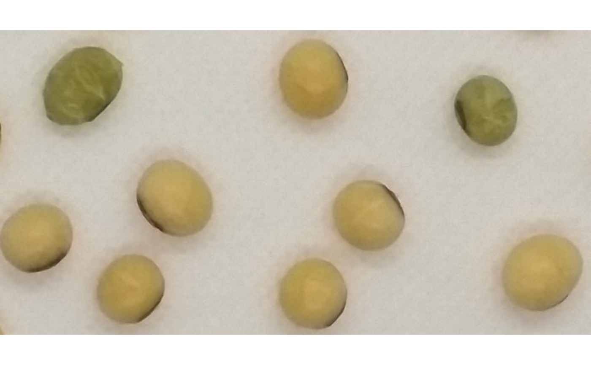
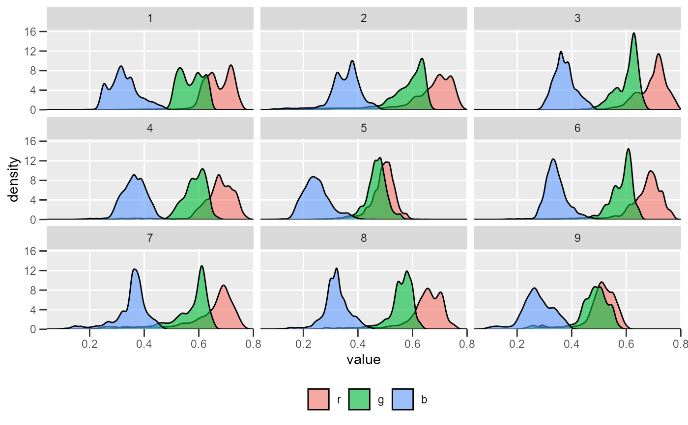

Get Red Green and Blue for image objects
objects_rgb.RdGet the Red Green and Blue (RGB) for objects in an image.
Produces an histogram of an objects_rgb object
objects_rgb( img, foreground = NULL, background = NULL, img_pattern = NULL, parallel = FALSE, workers = NULL, resize = FALSE, fill_hull = FALSE, invert = FALSE, index = "NB", my_index = NULL, object_index = "B", object_size = "large", tolerance = NULL, extension = NULL, lower_size = NULL, upper_size = NULL, topn_lower = NULL, topn_upper = NULL, nrows = 10000, show_image = TRUE, save_image = FALSE, prefix = "proc_", marker = NULL, marker_col = NULL, marker_size = NULL, marker_digits = NULL, dir_original = NULL, dir_processed = NULL, verbose = TRUE ) # S3 method for objects_rgb plot(x, ...)
Arguments
| img | The image to be analyzed. |
|---|---|
| foreground | A color palette of the foreground (optional). |
| background | A color palette of the background (optional). |
| img_pattern | A pattern of file name used to identify images to be
processed. For example, if |
| parallel | Processes the images asynchronously (in parallel) in separate
R sessions running in the background on the same machine. It may speed up
the processing time, especially when |
| workers | A positive numeric scalar or a function specifying the maximum number of parallel processes that can be active at the same time. |
| resize | Resize the image before processing? Defaults to |
| fill_hull | Fill holes in the binary image? Defaults to |
| invert | Inverts the binary image, if desired. This is useful to process
images with black background. Defaults to |
| index, my_index | A character value specifying the target mode for
conversion to binary image when |
| object_index | The same as |
| object_size | The size of the object. Used to automatically set up
|
| tolerance | The minimum height of the object in the units of image intensity between its highest point (seed) and the point where it contacts another object (checked for every contact pixel). If the height is smaller than the tolerance, the object will be combined with one of its neighbors, which is the highest. |
| extension | Radius of the neighborhood in pixels for the detection of neighboring objects. Defaults to 20. Higher value smooths out small objects. |
| lower_size, upper_size | Lower and upper limits for size for the image
analysis. Plant images often contain dirt and dust. To prevent dust from
affecting the image analysis, objects with lesser than 10% of the mean of
all objects are removed. Upper limit is set to |
| topn_lower, topn_upper | Select the top |
| nrows | The number of lines to be used in training step. |
| show_image | Show image after processing? Defaults to |
| save_image | Save the image after processing? The image is saved in the
current working directory named as |
| prefix | The prefix to be included in the processed images. Defaults to
|
| marker, marker_col, marker_size, marker_digits | The marker, color, size
and significant digits of the object marker. Defaults to |
| dir_original, dir_processed | The directory containing the original and
processed images. Defaults to |
| verbose | If |
| x | An object of class |
| ... | Currently not used |
Value
A list with the following objects.
objectsA data frame with the measures for each object.rgbA data frame with the Red, Green and Blue values for each objectindexesA data frame with the index computed according to the argumentobject_index.
A ggplot object containing the distribution of the pixels for each
index.
Details
A binary image is first generated to segment the foreground and background.
The argument index is useful to choose a proper index to segment the image
(see image_binary() for more details). Then, the number of objects in the
foreground is counted. Change tolerance and extension values to better set
up watershed-based object detection. If color palettes samples are provided, a
general linear model (binomial family) fitted to the RGB values is used to
segment fore- and background. For each segmented object, the RGB values are
obtained with. Users can also compute an index for each object using the
argument object_index, useful to classify objects based on its RGB values.
By using img_pattern it is possible to process several images with common
pattern names that are stored in the current working directory or in the
subdirectory informed in dir_original'. To speed up the computation time,
one can set parallel = TRUE.
Author
Tiago Olivoto tiagoolivoto@gmail.com
Tiago Olivoto tiagoolivoto@gmail.com
Examples
# \donttest{ library(pliman) img <- image_import(image_pliman("soy_green.jpg")) # Segment the foreground (grains) using the normalized blue index # Shows the average value of the blue index in each object rgb <- objects_rgb(img)# } # \donttest{ library(pliman) img <- image_import(image_pliman("soy_green.jpg")) # Segment the foreground (grains) using the normalized blue index # Shows the average value of the blue index in each object rgb <- objects_rgb(img)# }